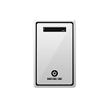
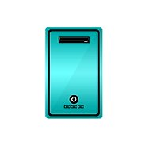

ULTIMA TWEAK

Optimización maxima de BIOS
Optimización avanzada de Windows
Testeo de Temp, Estabilidad, FPS
Reparacion parcial de errores Windows
20€
UNIVERSAL TWEAK
Ultima Tweak
Instalación Windows
Optimización de juegos
Resolución Estirada Óptima
Primer Mantenimiento Gratis
35€
INFINITY TWEAK

Universal Tweak
Instalación Drivers Óptimos
Overclocks potenciales
Reparacion de cualquier problema en PC
Instalación y Configuración OBS
70€